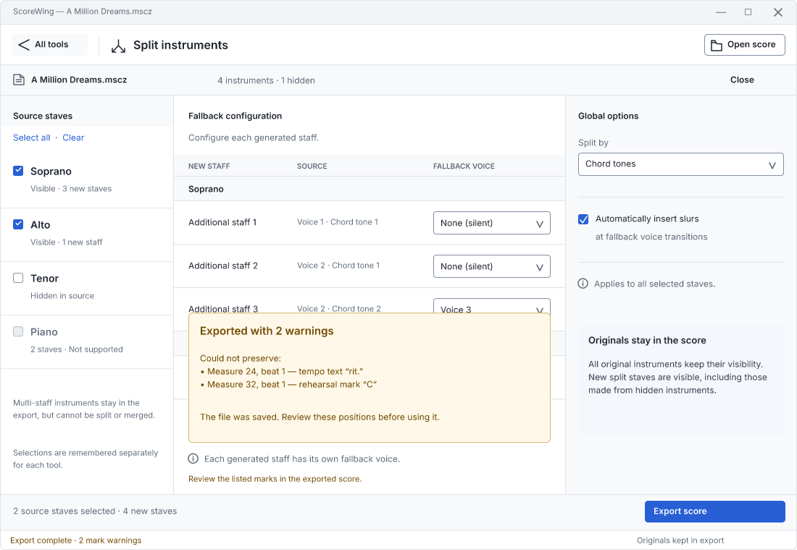

All originals keep their visibility. New results are visible. Each tool remembers its selections separately.Create groups using the existing workflow. Exports now keep selected source instruments alongside their merged results.

Preserve tempo text, metronome marks, playback changes, and rehearsal marks score-wide. If preservation fails, export succeeds with specific warnings. Entries shown here are illustrative.
Approved design reference. These Figcraft mockups document the implemented behavior.